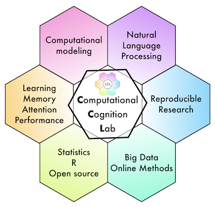

<!DOCTYPE html>
<html>
  <head>
    <title>My experiment</title>

    <!--
    <script src="https://unpkg.com/jspsych@7.3.3"></script>
    <script src="https://unpkg.com/@jspsych/plugin-html-keyboard-response@1.1.2"></script>
    <script src="https://unpkg.com/@jspsych/plugin-canvas-button-response@1.1.2"></script>
    <link href="https://unpkg.com/jspsych@7.3.3/css/jspsych.css" rel="stylesheet" type="text/css" />
    <script src="jatos.js"></script>
    <script src="stimuli.js"></script>
    -->

    <script src="jatos.js"></script>
    <script src="stimlist.js"></script>
    <script src="jspsych/dist/jspsych.js"></script>
    <script src="jspsych/dist/plugin-html-keyboard-response.js"></script>
    <script src="jspsych/dist/plugin-html-button-response.js"></script>
    <script src="jspsych/dist/plugin-external-html.js"></script>
    <script src="jspsych/dist/plugin-survey-html-form.js"></script>
    <script src="jspsych/dist/plugin-audio-button-response.js"></script>
    <script src="jspsych/dist/plugin-survey-multi-select.js"></script>
    <script src="jspsych/dist/plugin-survey-text.js"></script>
    <script src="jspsych/dist/plugin-browser-check.js"></script>
    <script src="jspsych/dist/plugin-preload.js"></script>

    <link href="jspsych/dist/jspsych.css" rel="stylesheet" type="text/css" />
    <link href="css/custom.css" rel="stylesheet" type="text/css" />
<style>

  .chord-stimulus {
    font-size: 500%;
  }

</style>

  </head>
  <body></body>


  <script type="text/javascript">
    // jatos parameters
    // check for sona

    var run_simulation = false;
    var run_jatos = false;
    var participant_type = "mturk";

    if(run_jatos === true){
      jatos.onLoad(function() {

        /* check for SONA system participant */
        if (window.jatos && jatos.urlQueryParameters.SONA_ID) {
            console.log('Sona information is available');
            sona_participant_id = jatos.urlQueryParameters.SONA_ID;
            jsPsych.data.addProperties({ID: sona_participant_id});
            participant_type = "SONA";
        } else {
            console.log('Sona information is not available (setting value to -1)');
            sona_participant_id = -1;
        }
        console.log('sona_participant_id = ' + sona_participant_id);

      });
    }

    // initialize JsPsych

    const jsPsych = initJsPsych({
      show_progress_bar: true,
      auto_update_progress_bar: false,
      on_finish: () => {

        if (run_jatos === true){
          var resultJson = jsPsych.data.get().json();
          jatos.submitResultData(resultJson, jatos.endStudy);

        } else {

        jsPsych.data.displayData();
        }
      }
    });
</script>


  <script>


  var rand_subject_id = jsPsych.randomization.randomID(16);

  jsPsych.data.addProperties({ID: rand_subject_id,
    counterbalance: "1a-feedback"
  });

  //stimlist = stimlist.slice(0,2);

  var timeline = [];

  /*Browser Check */
    var browser_check = {
      type: jsPsychBrowserCheck
    };

     /* define Welcome */
    var welcome = {
      type: jsPsychHtmlButtonResponse,
      stimulus: `
      
      <p>Welcome, this experiment requires your full attention for approximately 15 minutes.</p>
<p><b>Important:</b></p>
<p><b>This study requires listening to audio. Headphones are recommended.</b></p>
<p><b>This study can only be completed once. Reloading or pressing the back button will stop the study.</b></p>
<p><b>Please complete this study on a desktop or laptop using Chrome or Firefox.</b></p>
<p>Continue to consent form and instructions</p>
      `,
      choices: ["Continue"],
      css_classes: ["instruction_display"],
      post_trial_gap: 500,
      on_finish: function() {
          jsPsych.setProgressBar(0.05);
      }
    };

    /* Function to process consent */
    var check_consent = function(elem) {
        if (document.getElementById('consent_checkbox').checked) {
            return true;
        }
        else {
            alert("If you wish to participate, you must check the box next to the statement 'I agree to participate in this study.'");
            return false;
        }
        return false;
    };

    /* show consent */
    const consent = {
      type: jsPsychExternalHtml,
      url: 'entropy/experiment/consent/consent-statistical.html',
      cont_btn: "start",
      check_fn: check_consent
    };

    const demographics = {
      type: jsPsychSurveyHtmlForm,
      preamble: `<p>We are collecting basic demographic information as a part of this study</p>
      <p>You may decline to answer any or all of these questions: </p>`,
      html: `<label for="age">Age (enter or select a number):</label>
    <input type="number" id="age" name="age" min="1" max="100" />
    <br> <br>
    <label for="sex-select">What is your sex?</label>
    <select name="sex" id="sex-select">
        <option value="">choose</option>
        <option value="female">Female</option>
        <option value="male">Male</option>
    </select>
    <br> <br>
    <label for="hand-select">What is your handedness?</label>
    <select name="hand" id="hand-select">
        <option value="">choose</option>
        <option value="Left">Left</option>
        <option value="Right">Right</option>
        <option value="Both">Both</option>
    </select>
    <br> <br>
    <label for="vision-select">How is your vision?</label>
    <select name="vision" id="vision-select">
        <option value="">choose</option>
        <option value="Normal">Normal vision</option>
        <option value="Corrected">Corrected-to-normal vision</option>
        <option value="Impaired">Impaired vision</option>
    </select>
    <br> <br>
    <label for="english-select">What is your English ability?</label>
    <select name="english" id="english-select">
        <option value="">choose</option>
        <option value="First">First-language</option>
        <option value="Second">Second-language</option>
        <option value="None">No-English ability</option>
    </select>
    <br>
    <p> Thank you, press continue </p>
    <br><br>`,
      autofocus: 'test-resp-box',
      on_finish: function() {
        var resultJson = jsPsych.data.get().json();
        jatos.submitResultData(resultJson);
        jsPsych.setProgressBar(0.08);
      }
    };


  var instructions_1 = {
    type: jsPsychHtmlButtonResponse,
    stimulus: `
    <h2> Instructions </h2>
    <p> In this task you will listen to short audio sequences. </p>
    <p> The sequences vary in the amount of repeated notes.</p>
    <p> Your task is to judge whether the sequence has mostly the same notes or mostly different notes. </p>
    <p> Press continue for examples </p>
    `,
    css_classes: ["instruction_display"],
    choices: ['Continue'],
    post_trial_gap: 500,
    on_finish: function() {
          jsPsych.setProgressBar(0.1);
      }
  }

  var instructions_audio_level = {
    type: jsPsychHtmlButtonResponse,
    stimulus: `
    <h2> Adjust audio level </h2>
    <p> You will be presented with audio examples throughout this task </p>
    <p> Please adjust your volume to a comfortable listening level. </p>
    <p> Press continue for examples </p>
    `,
    css_classes: ["instruction_display"],
    choices: ['Continue'],
    post_trial_gap: 500,
    on_finish: function() {
          jsPsych.setProgressBar(0.11);
      }
  }

  var instructions_2 = {
    type: jsPsychHtmlButtonResponse,
    stimulus: `
    <h2>Example: Same note sequence </h2>
    <p> The next sequence is mostly the same note repeated.</p>
    <p> One of the notes is played almost all of the time.</p>
    <p> The other notes are played only once each.</p>
    <p> Press continue to listen to the example </p>
    `,
    css_classes: ["instruction_display"],
    choices: ['Continue'],
    post_trial_gap: 500,
    on_finish: function() {
          jsPsych.setProgressBar(0.12);
      }
  }

  var instructions_3 = {
    type: jsPsychAudioButtonResponse,
    stimulus: 'mp3s/freq_vec_1_1.mp3',
    prompt: `
    <h2>Listen: Same note sequence </h2>
    <p> Listen to the sequence. </p>
    <p> This sequence is mostly the same note(s).</p>
    <p> In the main task you will be asked to judge whether the notes are: </p>
    <p> "Mostly Same" or "Mostly Different" </p>
    <p> Choose the correct answer by clicking one of the buttons above</p>
    `,
    css_classes: ["instruction_display"],
    choices: ['Mostly Same','Mostly Different'],
    post_trial_gap: 500,
    on_finish: function() {
          jsPsych.setProgressBar(0.13);
      }
  }

    var instructions_4 = {
    type: jsPsychHtmlButtonResponse,
    stimulus: `
    <h2>Example: Different note sequence  </h2>
    <p> The next sequence are mostly different notes.</p>
    <p> All of the possible notes are played an equal number of times.</p>
    <p> Press continue to listen to the example </p>
    `,
    css_classes: ["instruction_display"],
    choices: ['Continue'],
    post_trial_gap: 500,
    on_finish: function() {
          jsPsych.setProgressBar(0.14);
      }
  }

  var instructions_5 = {
    type: jsPsychAudioButtonResponse,
    stimulus: 'mp3s/freq_vec_12_8.mp3',
    prompt: `
    <h2>Listen: Different note sequence </h2>
    <p> Listen to the sequence. </p>
    <p> This sequence is mostly different notes.</p>
    <p> In the main task you will be asked to judge whether the notes are: </p>
    <p> "Mostly Same" or "Mostly Different" </p>
    <p> Choose the correct answer by clicking one of the buttons above</p>
    `,
    css_classes: ["instruction_display"],
    choices: ['Mostly Same','Mostly Different'],
    post_trial_gap: 500,
    on_finish: function() {
          jsPsych.setProgressBar(0.15);
      }
  }

  var instructions_6 = {
    type: jsPsychHtmlButtonResponse,
    stimulus: `
    <h2> Instructions </h2>
    <p> On each trial you will listen to an auditory sequence </p>
    <p> Some of the sequences have "mostly same" notes, and some have "mostly different" notes </p>
    <p> On each trial you will judge whether the notes are "mostly same", or "mostly different".</p>
    <p> This task takes about 10-15 minutes </p>
    <p> Press continue to begin when ready.</p>
    `,
    css_classes: ["instruction_display"],
    choices: ['Continue'],
    post_trial_gap: 500,
    on_finish: function() {
        jsPsych.setProgressBar(0.2);
    }
  }

  var fixation = {
    type: jsPsychHtmlKeyboardResponse,
    stimulus: `
    <p> </p>
    `,
    choices: "NO_KEYS",
    trial_duration: 500
  }

  var midi_trial = {
    type: jsPsychAudioButtonResponse,
    stimulus: jsPsych.timelineVariable('stimulus') ,
    prompt: `
    <p> Listen to the sequence, then make your judgment</p>
    `,
    choices: ['Mostly Same','Mostly Different'],
    response_allowed_while_playing: false,
    data: {
      task: 'judgment',
      stim_id: jsPsych.timelineVariable('id'),
      bits: jsPsych.timelineVariable('bits'),
      frequency: jsPsych.timelineVariable('frequency_vector'),
      possible_notes: jsPsych.timelineVariable('possible_notes'),
      BPM: 120,
      note_length: "16th notes"
    },
    on_finish: function() {
        var curr_progress_bar_value = jsPsych.getProgressBarCompleted();
        jsPsych.setProgressBar(curr_progress_bar_value + (1/stimlist.length)*.7);
      }
  };

  var feedback = {
  type: jsPsychHtmlKeyboardResponse,
  trial_duration: 1000,
  stimulus: function(){
    var last_trial_bits = jsPsych.data.get().last(1).values()[0].bits;
    var last_response = jsPsych.data.get().last(1).values()[0].response;
    if(last_trial_bits >= 2){
      if(last_response === 1){
        return(`<p> Correct </p>`)
      }
      if(last_response === 0){
        return(`<p> Incorrect </p>`)
      }
    }
    if(last_trial_bits < 2){
       if(last_response === 1){
        return(`<p> Incorrect</p>`)
      }
      if(last_response === 0){
        return(`<p> Correct </p>`)
      }
    }

    },
    css_classes: ["feedback_display"]
  }

  var midi_procedure = {
    timeline: [fixation,midi_trial,feedback],
    timeline_variables: stimlist,
    randomize_order: true
  }

  var end_questions = {
      preamble: `
      <p> Thanks for participating, we are planning on running similar experiments in the future, and we are interested in your feedback. </p>
      `,
      type: jsPsychSurveyText,
      questions: [
        {prompt: 'Did you have any issues with the audio? Thanks for letting us know.', name: 'memory_aid', rows: 1},
        {prompt: 'Were you able to give this task your full attention, or did you get interrupted? Thanks for letting us know', name: 'attention', rows: 1},
        {prompt: 'Did you run into issues with the task, or other issues that might have impacted your performance?', name: 'general', rows: 3}
      ],
      css_classes: ["instruction_display"],
    on_finish: function() {
        jsPsych.setProgressBar(0.95);
    }
    }

    var debrief_mturk = {
      type: jsPsychExternalHtml,
      url: 'consent/debrief_mturk.html',
      cont_btn: "continue",
      on_start:  function() {
        var resultJson = jsPsych.data.get().json();
        jatos.submitResultData(resultJson);
     }
    };


  timeline.push(welcome);
  // timeline.push(consent);
  timeline.push(demographics);
  timeline.push(instructions_1);
  timeline.push(instructions_audio_level);
  timeline.push(instructions_2);
  timeline.push(instructions_3);
  timeline.push(instructions_4);
  timeline.push(instructions_5);
  timeline.push(instructions_6);
  timeline.push(midi_procedure);
  timeline.push(end_questions);
  //timeline.push(debrief_mturk);


  //jsPsych.run(timeline);

    /* start the experiment */
    if(run_jatos === true){
      jatos.onLoad(() => {
      jatos.addAbortButton();

      // add debrief after participant is defined
      if( participant_type === "SONA"){
       // timeline.push(debrief_sona);
      }
      if( participant_type === "mturk"){
        timeline.push(debrief_mturk);
      }

      if( run_simulation === true){
       jsPsych.simulate(timeline, "data-only");
      }

      if( run_simulation === false){
       jsPsych.run(timeline);
      }
    })

    } else {
      jsPsych.run(timeline);
    }


  </script>
</html>
